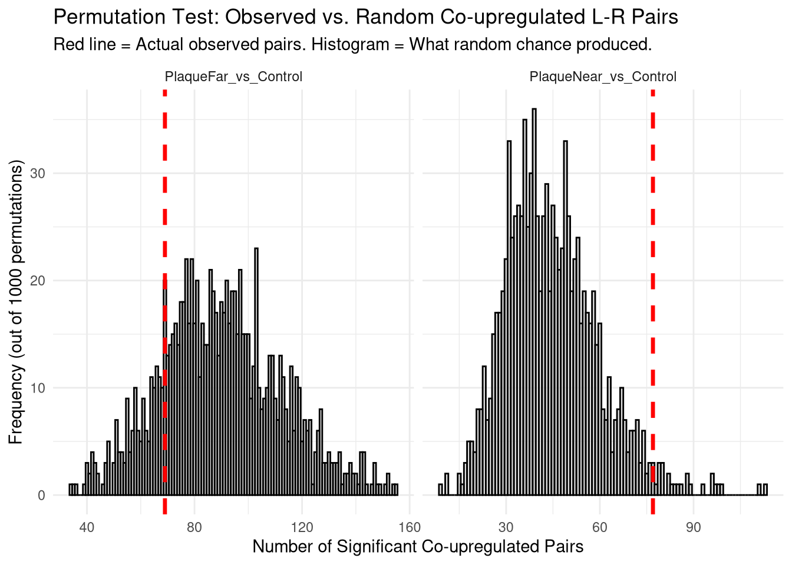
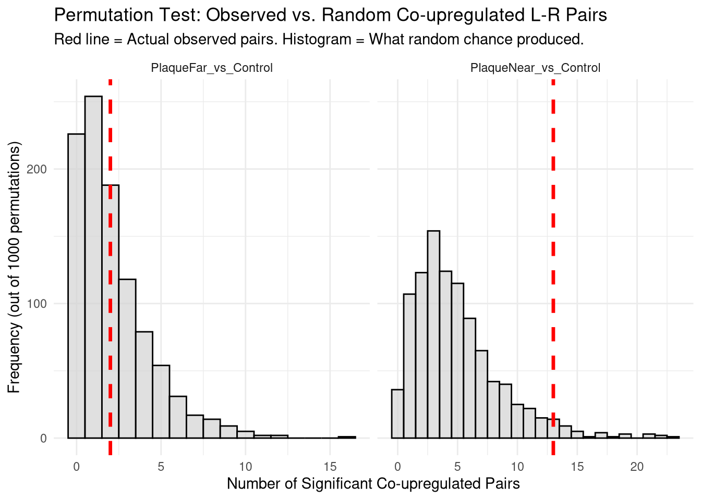

Code
suppressPackageStartupMessages({
library(OmnipathR)
library(dplyr)
library(tidyr)
library(data.table)
library(qs2)
library(ggplot2)
})suppressPackageStartupMessages({
library(OmnipathR)
library(dplyr)
library(tidyr)
library(data.table)
library(qs2)
library(ggplot2)
})base_dir <- "/nemo/lab/destrooperb/home/shared/zanettc/millie_proteomics"
run_num <- "run3"
results_dir <- file.path(base_dir, "results", run_num)
objects_dir <- file.path(base_dir, "data", "processed", run_num)
raw_dir <- file.path(base_dir, "data", "raw")
dir.create(results_dir, recursive = TRUE, showWarnings = FALSE)
dir.create(objects_dir, recursive = TRUE, showWarnings = FALSE)
dir.create(raw_dir, recursive = TRUE, showWarnings = FALSE)lr_network <- intercell_network(
transmitter_param = list(categories = c('ligand')),
receiver_param = list(categories = c('receptor')),
resources = NULL,
references_by_resource = TRUE)
lr_with_evidence <- lr_network %>%
dplyr::select(
Ligand = source_genesymbol,
Receptor = target_genesymbol,
sources,
references
) %>%
distinct() %>%
# Count how many databases confirm this interaction
mutate(curation_count = nchar(as.character(sources)) - nchar(gsub(";", "", as.character(sources))) + 1) %>%
# Count how many individual PMIDs (papers) support it
mutate(paper_count = nchar(as.character(references)) - nchar(gsub(";", "", as.character(references))) + 1) %>%
# Replace NAs with 0
mutate(across(c(curation_count, paper_count), ~replace_na(.x, 0)))res_df <- fread(file.path(results_dir, "Full_GroupComparison_Results.csv"))
clean_spec_raw <- fread(file.path(base_dir, "data/processed/run1/clean_spec_raw.csv"))
protein_dictionary <- clean_spec_raw %>%
dplyr::select(Protein = PG.ProteinGroups,
Gene = PG.Genes,
Description = PG.ProteinDescriptions) %>%
distinct()
msstats_results <- res_df %>%
# handle NAs
filter(Label %in% c("PlaqueFar_vs_Control", "PlaqueNear_vs_Control")) %>%
filter(!is.na(adj.pvalue), is.finite(log2FC)) %>%
# Join with dictionary
left_join(protein_dictionary, by = "Protein") %>%
# Clean up Gene names and define significance
mutate(
# Fallback to Protein ID if Gene name is missing or empty
#Change to upper case to match with human gene symbols
Gene = toupper(ifelse(is.na(Gene) | Gene == "", Protein, Gene)),
)#Ligands data
ligands_data <- msstats_results %>%
dplyr::select(Label, Ligand = Gene, logFC_Ligand = log2FC, pval_Ligand = adj.pvalue)
#Receptor data
receptors_data <- msstats_results %>%
dplyr::select(Label, Receptor = Gene, logFC_Receptor = log2FC, pval_Receptor = adj.pvalue)Join network with ligands, then join with receptors matching both the receptor name and the label. Ensures evaluating ligand X and receptor Y within the same MSstats comparison.
all_cross_talk <- lr_with_evidence %>%
#keeps only rows that exist in both
inner_join(ligands_data, by = "Ligand", relationship = "many-to-many") %>%
#match both receptor name and the label (condition of interest) - keeps only rows where the recieving recedptor was also detected, in that specific condition
inner_join(receptors_data, by = c("Receptor", "Label")) %>%
# Filter to keep only rows where BOTH proteins were detected and statistically significant
filter(pval_Ligand < 0.05 & pval_Receptor < 0.05) %>%
arrange(desc(curation_count))Warning in inner_join(., receptors_data, by = c("Receptor", "Label")): Detected an unexpected many-to-many relationship between `x` and `y`.
ℹ Row 2011 of `x` matches multiple rows in `y`.
ℹ Row 1949 of `y` matches multiple rows in `x`.
ℹ If a many-to-many relationship is expected, set `relationship =
"many-to-many"` to silence this warning.#4839 length when inner joining to ligand
#2135 length when inner joining to receptor and label too.
#147 length when filtering to sig for both. logFC filters set to 0 to be permissive.
co_upregulated_all <- all_cross_talk %>%
filter(logFC_Ligand > 0 & logFC_Receptor > 0) %>%
group_by(Label) %>%
arrange(desc(logFC_Ligand + logFC_Receptor)) %>%
ungroup() %>%
dplyr::select(Label, Ligand, Receptor, logFC_Ligand, logFC_Receptor, paper_count, references)
co_upregulated_allinteraction_summary <- co_upregulated_all %>%
count(Label, name = "Observed_Interactions")
interaction_summaryset.seed(42)
n_perms <- 1000
results_list <- vector("list", n_perms)
print(paste("Starting", n_perms, "permutations..."))[1] "Starting 1000 permutations..."for (i in 1:n_perms) {
if (i %% 100 == 0) {
message("Completed ", i, " of ", n_perms, " permutations...")
}
# Shuffle Gene names to break biological links but keep data structure
shuffled_msstats <- msstats_results %>%
group_by(Label) %>%
mutate(Gene = sample(Gene)) %>%
ungroup()
# Rebuild fake ligand/receptor tables
shuffled_ligands <- shuffled_msstats %>%
select(Label, Ligand = Gene, logFC_Ligand = log2FC, pval_Ligand = adj.pvalue)
shuffled_receptors <- shuffled_msstats %>%
select(Label, Receptor = Gene, logFC_Receptor = log2FC, pval_Receptor = adj.pvalue)
# Re-run the network merge and filtering with fake data
shuffled_cross_talk <- lr_with_evidence %>%
inner_join(shuffled_ligands, by = "Ligand", relationship = "many-to-many") %>%
inner_join(shuffled_receptors, by = c("Receptor", "Label"), relationship = "many-to-many")%>%
filter(pval_Ligand < 0.05, pval_Receptor < 0.05,
logFC_Ligand > 0, logFC_Receptor > 0)
# Count hits
shuffled_summary <- shuffled_cross_talk %>%
count(Label, name = "Simulated_Interactions") %>%
mutate(Permutation = i)
results_list[[i]] <- shuffled_summary
}Completed 100 of 1000 permutations...Completed 200 of 1000 permutations...Completed 300 of 1000 permutations...Completed 400 of 1000 permutations...Completed 500 of 1000 permutations...Completed 600 of 1000 permutations...Completed 700 of 1000 permutations...Completed 800 of 1000 permutations...Completed 900 of 1000 permutations...Completed 1000 of 1000 permutations...# Combine simulated results
null_distribution_df <- bind_rows(results_list)
# Ensure cases where 0 interactions were found are explicitly tracked
all_labels <- unique(msstats_results$Label)
grid <- expand_grid(Label = all_labels, Permutation = 1:n_perms)
null_distribution_df <- grid %>%
left_join(null_distribution_df, by = c("Label", "Permutation")) %>%
mutate(Simulated_Interactions = replace_na(Simulated_Interactions, 0))
# Calculate Empirical P-values
empirical_results <- interaction_summary %>%
left_join(null_distribution_df, by = "Label", relationship = "many-to-many") %>%
group_by(Label, Observed_Interactions) %>%
summarise(
Expected_Mean = mean(Simulated_Interactions),
Permutations_Greater_or_Equal = sum(Simulated_Interactions >= Observed_Interactions),
Empirical_P_Value = sum(Simulated_Interactions >= Observed_Interactions) / n_perms,
.groups = "drop"
)
print(empirical_results)# A tibble: 2 × 5
Label Observed_Interactions Expected_Mean Permutations_Greater…¹
<chr> <int> <dbl> <int>
1 PlaqueFar_vs_Contr… 69 89.9 838
2 PlaqueNear_vs_Cont… 77 44.5 27
# ℹ abbreviated name: ¹Permutations_Greater_or_Equal
# ℹ 1 more variable: Empirical_P_Value <dbl>perm_plot <- ggplot(null_distribution_df, aes(x = Simulated_Interactions)) +
geom_histogram(binwidth = 1, fill = "lightgray", color = "black", alpha = 0.7) +
geom_vline(data = interaction_summary, aes(xintercept = Observed_Interactions),
color = "red", linetype = "dashed", size = 1.2) +
facet_wrap(~Label, scales = "free_x") +
theme_minimal() +
labs(
title = "Permutation Test: Observed vs. Random Co-upregulated L-R Pairs",
subtitle = "Red line = Actual observed pairs. Histogram = What random chance produced.",
x = "Number of Significant Co-upregulated Pairs",
y = "Frequency (out of 1000 permutations)"
)Warning: Using `size` aesthetic for lines was deprecated in ggplot2 3.4.0.
ℹ Please use `linewidth` instead.print(perm_plot)
Sorted by decreasing paper count
co_upregulated_all <- all_cross_talk %>%
filter(logFC_Ligand > 0.5 & logFC_Receptor > 0.5) %>%
group_by(Label) %>%
arrange(desc(paper_count)) %>%
ungroup() %>%
dplyr::select(Label, Ligand, Receptor, logFC_Ligand, logFC_Receptor, paper_count, references)
co_upregulated_allSorted by descending LogFC_Ligand + logFC_Receptor:
co_upregulated_all <- all_cross_talk %>%
filter(logFC_Ligand > 0.5 & logFC_Receptor > 0.5) %>%
group_by(Label) %>%
arrange(desc(logFC_Ligand + logFC_Receptor)) %>%
ungroup() %>%
dplyr::select(Label, Ligand, Receptor, logFC_Ligand, logFC_Receptor, paper_count, references)
co_upregulated_allinteraction_summary <- co_upregulated_all %>%
count(Label, name = "Observed_Interactions")
interaction_summaryset.seed(42)
n_perms <- 1000
results_list <- vector("list", n_perms)
print(paste("Starting", n_perms, "permutations..."))[1] "Starting 1000 permutations..."for (i in 1:n_perms) {
if (i %% 100 == 0) {
message("Completed ", i, " of ", n_perms, " permutations...")
}
# Shuffle Gene names to break biological links but keep data structure
shuffled_msstats <- msstats_results %>%
group_by(Label) %>%
mutate(Gene = sample(Gene)) %>%
ungroup()
# Rebuild fake ligand/receptor tables
shuffled_ligands <- shuffled_msstats %>%
select(Label, Ligand = Gene, logFC_Ligand = log2FC, pval_Ligand = adj.pvalue)
shuffled_receptors <- shuffled_msstats %>%
select(Label, Receptor = Gene, logFC_Receptor = log2FC, pval_Receptor = adj.pvalue)
# Re-run the network merge and filtering with fake data
shuffled_cross_talk <- lr_with_evidence %>%
inner_join(shuffled_ligands, by = "Ligand", relationship = "many-to-many") %>%
inner_join(shuffled_receptors, by = c("Receptor", "Label"), relationship = "many-to-many")%>%
filter(pval_Ligand < 0.05, pval_Receptor < 0.05,
logFC_Ligand > 0.5, logFC_Receptor > 0.5)
# Count hits
shuffled_summary <- shuffled_cross_talk %>%
count(Label, name = "Simulated_Interactions") %>%
mutate(Permutation = i)
results_list[[i]] <- shuffled_summary
}Completed 100 of 1000 permutations...Completed 200 of 1000 permutations...Completed 300 of 1000 permutations...Completed 400 of 1000 permutations...Completed 500 of 1000 permutations...Completed 600 of 1000 permutations...Completed 700 of 1000 permutations...Completed 800 of 1000 permutations...Completed 900 of 1000 permutations...Completed 1000 of 1000 permutations...# Combine simulated results
null_distribution_df <- bind_rows(results_list)
# Ensure cases where 0 interactions were found are explicitly tracked
all_labels <- unique(msstats_results$Label)
grid <- expand_grid(Label = all_labels, Permutation = 1:n_perms)
null_distribution_df <- grid %>%
left_join(null_distribution_df, by = c("Label", "Permutation")) %>%
mutate(Simulated_Interactions = replace_na(Simulated_Interactions, 0))
# Calculate Empirical P-values
empirical_results <- interaction_summary %>%
left_join(null_distribution_df, by = "Label", relationship = "many-to-many") %>%
group_by(Label, Observed_Interactions) %>%
summarise(
Expected_Mean = mean(Simulated_Interactions),
Permutations_Greater_or_Equal = sum(Simulated_Interactions >= Observed_Interactions),
Empirical_P_Value = sum(Simulated_Interactions >= Observed_Interactions) / n_perms,
.groups = "drop"
)
print(empirical_results)# A tibble: 2 × 5
Label Observed_Interactions Expected_Mean Permutations_Greater…¹
<chr> <int> <dbl> <int>
1 PlaqueFar_vs_Contr… 2 2.18 520
2 PlaqueNear_vs_Cont… 13 4.92 43
# ℹ abbreviated name: ¹Permutations_Greater_or_Equal
# ℹ 1 more variable: Empirical_P_Value <dbl>perm_plot <- ggplot(null_distribution_df, aes(x = Simulated_Interactions)) +
geom_histogram(binwidth = 1, fill = "lightgray", color = "black", alpha = 0.7) +
geom_vline(data = interaction_summary, aes(xintercept = Observed_Interactions),
color = "red", linetype = "dashed", size = 1.2) +
facet_wrap(~Label, scales = "free_x") +
theme_minimal() +
labs(
title = "Permutation Test: Observed vs. Random Co-upregulated L-R Pairs",
subtitle = "Red line = Actual observed pairs. Histogram = What random chance produced.",
x = "Number of Significant Co-upregulated Pairs",
y = "Frequency (out of 1000 permutations)"
)
print(perm_plot)